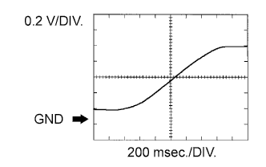

SFI SYSTEM > TERMINALS OF ECM |
| CHECK ECM |
Measure the voltage according to the value(s) in the table below.
| Terminal No. (Symbol) | Wiring Color | Terminal Description | Condition | Specified Condition |
| G44-24 (BATT) - C30-12 (E1) | L - BR | Battery (for measuring battery voltage and for ECM memory) | Always | 11 to 14 V |
| C30-23 (+BM) - C30-12 (E1) | P - BR | Power source of throttle actuator | Always | 11 to 14 V |
| G45-21 (IGSW) - C30-12 (E1) | W - BR | Engine switch | Engine switch on (IG) | 11 to 14 V |
| G44-22 (+B) - C30-12 (E1) | W - BR | Power source of ECM | Engine switch on (IG) | 11 to 14 V |
| G44-23 (+B2) - C30-12 (E1) | W - BR | Power source of ECM | Engine switch on (IG) | 11 to 14 V |
| C29-19 (OC1+) - C29-20 (OC1-) | LG - L-Y | Camshaft timing oil control valve (for Intake Side of Bank 1) | Idling | Pulse generation (See waveform 1) |
| C28-19 (OC2+) - C28-20 (OC2-) | L-R - LG | Camshaft timing oil control valve (for Intake Side of Bank 2) | Idling | Pulse generation (See waveform 1) |
| C29-21 (OE1+) - C29-22 (OE1-) | B-R - G-W | Camshaft timing oil control valve (for Exhaust Side of Bank 1) | Idling | Pulse generation (See waveform 1) |
| C28-21 (OE2+) - C28-22 (OE2-) | B-L- L | Camshaft timing oil control valve (for Exhaust Side of Bank 2) | Idling | Pulse generation (See waveform 1) |
| G44-9 (MREL) - C30-12 (E1) | V - BR | EFI relay | Engine switch on (IG) | 11 to 14 V |
| C29-14 (VG) - C29-13 (E2G) | R-W - B-W | Mass air flow meter | Idling, shift lever in P or N, A/C switch off | 0.5 to 3.0 V |
| C29-15 (THA) - C29-7 (E2) | Y - W-R | Intake air temperature sensor | Idling, intake air temperature 20°C (68°F) | 0.5 to 3.4 V |
| C30-17 (THW) - C29-7 (E2) | G - W-R | Engine coolant temperature sensor | Idling, engine coolant temperature 80°C (176°F) | 0.2 to 1.0 V |
| C30-13 (VCTA) - C30-14 (ETA) | R - W | Power source of throttle position sensor (fixed voltage) | Engine switch on (IG) | 4.5 to 5.5 V |
| C30-15 (VTA1) - C30-14 (ETA) | W-R - W | Throttle position sensor (for engine control) | Engine switch on (IG), throttle valve fully closed | 0.5 to 1.1 V |
| Engine switch on (IG), throttle valve fully open | 3.2 to 4.8 V | |||
| C30-16 (VTA2) - C30-14 (ETA) | R-B - W | Throttle position sensor (for sensor malfunction detection) | Engine switch on (IG), throttle valve fully closed | 2.1 to 3.1 V |
| Engine switch on (IG), throttle valve fully open | 4.6 to 5.0 V | |||
| G45-6 (VPA) - G45-3 (EPA) | L - P | Accelerator pedal position sensor (for engine control) | Engine switch on (IG), accelerator pedal released | 0.5 to 1.1 V |
| Engine switch on (IG), accelerator pedal fully depressed | 2.6 to 4.5 V | |||
| G45-5 (VPA2) - G45-1 (EPA2) | GR - W | Accelerator pedal position sensor (for sensor malfunction detection) | Engine switch on (IG), accelerator pedal released | 1.2 to 2.0 V |
| Engine switch on (IG), accelerator pedal fully depressed | 3.4 to 5.3 V | |||
| G45-4 (VCPA) - G45-3 (EPA) | LG - P | Power source of accelerator pedal position sensor (for VPA) | Engine switch on (IG) | 4.5 to 5.5 V |
| G45-2 (VCP2) - G45-1 (EPA2) | R - W | Power source of accelerator pedal position sensor (for VPA2) | Engine switch on (IG) | 4.5 to 5.5 V |
| C31-17 (HA1A) - C31-16 (E04) | B-W - W-B | Air fuel ratio sensor heater | Idling with warm engine | Pulse generation (See waveform 2) |
| C31-17 (HA1A) - C31-16 (E04) | B-W - W-B | Air fuel ratio sensor heater | Engine switch on (IG) | 11 to 14 V |
| C31-19 (HA2A) - C31-18 (E05) | R-L - W-B | Air fuel ratio sensor heater | Idling with warm engine | Pulse generation (See waveform 2) |
| C31-19 (HA2A) - C31-18 (E05) | R-L - W-B | Air fuel ratio sensor heater | Engine switch on (IG) | 11 to 14 V |
| C30-1 (A1A+) - C30-12 (E1) | Y -BR | Air fuel ratio sensor | Engine switch on (IG) | 3.3 V* |
| C30-2 (A1A-) - C30-12 (E1) | L - BR | Air fuel ratio sensor | Engine switch on (IG) | 2.9 V* |
| C30-7 (A2A+) - C30-12 (E1) | P - BR | Air fuel ratio sensor | Engine switch on (IG) | 3.3 V* |
| C30-8 (A2A-) - C30-12 (E1) | V - BR | Air fuel ratio sensor | Engine switch on (IG) | 2.9 V* |
| C31-12 (HT1B) - C31-11 (E03) | G-Y - W-B | Heated oxygen sensor heater | Idling | Below 3.0 V |
| C31-12 (HT1B) - C31-11 (E03) | G-Y - W-B | Heated oxygen sensor heater | Engine switch on (IG) | 11 to 14 V |
| C31-13 (HT2B) - C31-11 (E03) | P - W-B | Heated oxygen sensor heater | Idling | Below 3.0 V |
| C31-13 (HT2B) - C31-11 (E03) | P - W-B | Heated oxygen sensor heater | Engine switch on (IG) | 11 to 14 V |
| C28-2 (OX1B) - C28-1 (EX1B) | B - GR | Heated oxygen sensor | Engine speed maintained at 2500 rpm for 2 minutes after warming up sensor | Pulse generation (See waveform 3) |
| C28-4 (OX2B) - C28-3 (EX2B) | W - L-W | |||
| C31-6 (#10) - C31-14 (E01) | B - W-B | Fuel injector | Engine switch on (IG) | 11 to 14 V |
| C31-1 (#20) - C31-14 (E01) | L - W-B | Idling | Pulse generation (See waveform 4) | |
| C31-7 (#30) - C31-14 (E01) | R - W-B | |||
| C31-2 (#40) - C31-14 (E01) | G - W-B | |||
| C31-8 (#50) - C31-14 (E01) | GR - W-B | |||
| C31-3 (#60) - C31-14 (E01) | P-L - W-B | |||
| C31-9 (#70) - C31-14 (E01) | V - W-B | |||
| C31-4 (#80) - C31-14 (E01) | LG - W-B | |||
| C29-11 (KNK1) - C29-12 (EKNK) | W - B | Knock sensor | Engine speed maintained at 4000 rpm after warming up engine | Pulse generation (See waveform 5) |
| C29-5 (KNK2) - C29-6 (EKN2) | W - B | |||
| C29-9 (KNK3) - C29-10 (EKN3) | G - R | |||
| C29-3 (KNK4) - C29-4 (EKN4) | G - R | |||
| C28-7 (VV1+) - C28-8 (VV1-) | L-B - B-W | VVT sensor (for Intake Side of Bank 1) | Idling | Pulse generation (See waveform 6) |
| C28-12 (VV2+) - C28-11 (VV2-) | G-B - Y | VVT sensor (for Intake Side of Bank 2) | Idling | Pulse generation (See waveform 6) |
| C28-13 (EV1+) - C28-14 (EV1-) | W - Y | VVT sensor (for Exhaust Side of Bank 1) | Idling | Pulse generation (See waveform 17) |
| C28-18 (EV2+) - C28-17 (EV2-) | V - B-R | VVT sensor (for Exhaust Side of Bank 2) | Idling | Pulse generation (See waveform 17) |
| C28-6 (NE+) - C28-5 (NE-) | L - B | Crankshaft position sensor | Idling | Pulse generation (See waveform 6) |
| C30-24 (IGT1) - C30-12 (E1) | B-L - BR | Ignition coil (ignition signal) | Idling | Pulse generation (See waveform 7) |
| C29-27 (IGT2) - C30-12 (E1) | P-L - BR | |||
| C30-27 (IGT3) - C30-12 (E1) | G-W - BR | |||
| C29-26 (IGT4) - C30-12 (E1) | P - BR | |||
| C29-25 (IGT5) - C30-12 (E1) | W-L - BR | |||
| C30-28 (IGT6) - C30-12 (E1) | L-B - BR | |||
| C30-26 (IGT7) - C30-12 (E1) | V - BR | |||
| C30-25 (IGT8) - C30-12 (E1) | LG - BR | |||
| C30-6 (IGF1) - C30-12 (E1) | G-R - BR | Ignition coil (ignition confirmation signal) | Engine switch on (IG) | 4.5 to 5.5 V |
| Idling | Pulse generation (See waveform 7) | |||
| C31-5 (IGF2) - C30-12 (E1) | B-W - BR | Ignition coil (ignition confirmation signal) | Engine switch on (IG) | 4.5 to 5.5 V |
| Idling | Pulse generation (See waveform 7) | |||
| C30-18 (PRG) - C30-12 (E1) | G-B - BR | Purge VSV | Engine switch on (IG) | 11 to 14 V |
| Idling | Pulse generation (See waveform 8) | |||
| G44-18 (SPD) - C30-12 (E1) | R - BR | Speed signal from combination meter | Driving at 20 km/h (12 mph) | Pulse generation (See waveform 9) |
| G45-10 (STA) - C30-12 (E1) | W - BR | Starter signal | Cranking | 5.5 V or higher |
| C29-2 (NSW) - C30-12 (E1) | B - BR | Park/neutral position switch | Engine switch on (IG), shift lever position not in P or N | 11 to 14 V |
| Engine switch on (IG), shift lever in P or N | Below 3.0 V | |||
| G45-18 (STP) - C30-12 (E1) | V - BR | Stop light switch | Brake pedal depressed | 7.5 to 14 V |
| Brake pedal released | Below 1.5 V | |||
| G44-8 (ST1-) - C30-12 (E1) | B - BR | Stop light switch (opposite to voltage at STP terminal) | Engine switch on (IG), brake pedal depressed | Below 1.5 V |
| Engine switch on (IG), brake pedal released | 7.5 to 14 V | |||
| C31-20 (M+) - C31-10 (ME01) | W - W-B | Throttle actuator | Idling with warm engine | Pulse generation (See waveform 10) |
| C30-29 (M-) - C31-10 (ME01) | B - W-B | Throttle actuator | Idling with warm engine | Pulse generation (See waveform 11) |
| G45-8 (FC) - C30-12 (E1) | G - BR | Fuel pump control | Engine switch on (IG) | 11 to 14 V |
| G44-3 (FPC) - C30-12 (E1) | G - BR | Fuel pump control | Engine switch on (IG) | Below 1.5 V |
| G44-13 (W) - C30-12 (E1) | V - BR | MIL | Engine switch on (IG) | Below 3.0 V |
| Idling | 11 to 14 V | |||
| G45-28 (TC) - C30-12 (E1) | V - BR | Terminal TC of DLC3 | Engine switch on (IG) | 11 to 14 V |
| G45-29 (TACH) - C30-12 (E1) | P - BR | Engine speed | Idling | Pulse generation (See waveform 12) |
| C28-15 (VCV1) - C29-7 (E2) | P-L - W-R | Power source for sensor (fixed voltage) | Engine switch on (IG) | 4.5 to 5.5 V |
| C28-16 (VCV2) - C29-7 (E2) | G - W-R | Power source for sensor (fixed voltage) | Engine switch on (IG) | 4.5 to 5.5 V |
| C29-28 (ALT) - C30-12 (E1) | L - BR | Generator | Engine switch on (IG) | 11 to 14 V |
| G45-32 (CANH) - C30-12 (E1) | R - BR | CAN communication line | Engine switch on (IG) | Pulse generation (See waveform 13) |
| G45-31 (CANL) - C30-12 (E1) | W - BR | CAN communication line | Engine switch on (IG) | Pulse generation (See waveform 14) |
| G45-34 (CANP) - C30-12 (E1) | BR - BR | CAN communication line | Engine switch on (IG) | Pulse generation (See waveform 13) |
| G45-33 (CANN) - C30-12 (E1) | GR - BR | CAN communication line | Engine switch on (IG) | Pulse generation (See waveform 14) |
| C30-19 (ACIS) - C30-12 (E1) | B-W - BR | Vacuum switching valve for ACIS (Acoustic Control Induction System) operation signal | Engine switch on (IG) | 11 to 14 V |
| C28-26 (AIRV) - C30-12 (E1) | P - BR | Air switching valve for secondary air injection system | Engine switch on (IG) | 11 to 14 V |
| C29-23 (AIRP) - C30-12 (E1) | V-W - BR | Air pump control | Engine switch on (IG) | 11 to 14 V |
| C30-20 (AIR1) - C30-12 (E1) | L - BR | Air switching valve for secondary air injection system | Engine switch on (IG) | 11 to 14 V |
| C29-30 (AIDI) - C30-12 (E1) | G - BR | Diagnostic information signal for secondary air injection system | Secondary air injection system operating | Pulse generation (See waveform 16) |
| G44-1 (AIP) - C29-7 (E2) | V - W-R | Secondary air injection system pressure signal | Engine switch on (IG) | 3.0 to 3.6 V |
| G44-2 (AIP2) - C29-7 (E2) | B - W-R | Secondary air injection system pressure signal | Engine switch on (IG) | 3.0 to 3.6 V |
| C28-9 (G2) - C28-10 (G2-) | V - Y | Camshaft position sensor | Idling | Pulse generation (See waveform 15) |
| G45-26 (DI) - C30-12 (E1) | GR - BR | Fuel pump control | Engine switch on (IG) | 0 to 3.0 V |
| C29-16 (PSP) - C30-12 (E1) | LG-B - BR | Power steering oil pressure switch | Engine switch on (IG) | 0.5 to 4.5 V |
| C29-8 (PIM) - C29-7 (E2) | G-B - W-R | Manifold absolute pressure sensor | Idling | 1.2 to 2.0 V |
| C28-23 (EGR1) - C30-12 (E1) | W-R - BR | EGR valve | Engine racing | Pulse generation (See waveform 18) |
| C28-36 (EGR2) - C30-12 (E1) | G-W - BR | EGR valve | Engine racing | Pulse generation (See waveform 18) |
| C28-30 (EGR3) - C30-12 (E1) | L-Y - BR | EGR valve | Engine racing | Pulse generation (See waveform 18) |
| C28-24 (EGR4) - C30-12 (E1) | G-R - BR | EGR valve | Engine racing | Pulse generation (See waveform 18) |
 |
Waveform 1:
| Terminal No. (Symbol) | Tool Setting | Condition |
| C29-19 (OC1+) - C29-20 (OC1-) | 5 V/DIV., 1 msec./DIV. | Idling |
| C28-19 (OC2+) - C28-20 (OC2-) | 5 V/DIV., 1 msec./DIV. | Idling |
| C29-21 (OE1+) - C29-22 (OE1-) | 5 V/DIV., 1 msec./DIV. | Idling |
| C28-21 (OE2+) - C28-22 (OE2-) | 5 V/DIV., 1 msec./DIV. | Idling |
Waveform 2:
| Terminal No. (Symbol) | Tool Setting | Condition |
| CH1: C31-17 (HA1A) - C31-16 (E04) | 5 V/DIV., 10 msec./DIV. | Idling with warm engine |
| CH2: C31-19 (HA2A) - C31-18 (E05) | 5 V/DIV., 10 msec./DIV. | Idling with warm engine |
|  |
Waveform 3:
| Terminal No. (Symbol) | Tool Setting | Condition |
| C28-2 (OX1B) - C28-1 (EX1B) | 0.2 V/DIV., 200 msec./DIV. | Engine speed maintained at 2500 rpm for 2 minutes after warming up sensor |
| C28-4 (OX2B) - C28-3 (EX2B) | 0.2 V/DIV., 200 msec./DIV. | Engine speed maintained at 2500 rpm for 2 minutes after warming up sensor |
Waveform 4:
| Terminal No. (Symbol) | Tool Setting | Condition |
| C31-6 (#10) - C31-14 (E01) | 20 V/DIV., 20 msec./DIV. | Idling |
| C31-1 (#20) - C31-14 (E01) | 20 V/DIV., 20 msec./DIV. | Idling |
| C31-7 (#30) - C31-14 (E01) | 20 V/DIV., 20 msec./DIV. | Idling |
| C31-2 (#40) - C31-14 (E01) | 20 V/DIV., 20 msec./DIV. | Idling |
| C31-8 (#50) - C31-14 (E01) | 20 V/DIV., 20 msec./DIV. | Idling |
| C31-3 (#60) - C31-14 (E01) | 20 V/DIV., 20 msec./DIV. | Idling |
| C31-9 (#70) - C31-14 (E01) | 20 V/DIV., 20 msec./DIV. | Idling |
| C31-4 (#80) - C31-14 (E01) | 20 V/DIV., 20 msec./DIV. | Idling |
Waveform 5:
| Terminal No. (Symbol) | Tool Setting | Condition |
| C29-11 (KNK1) - C29-12 (EKNK) | 1 V/DIV., 1 msec./DIV. | Engine speed maintained at 4000 rpm after warming up engine |
| C29-5 (KNK2) - C29-6 (EKN2) | 1 V/DIV., 1 msec./DIV. | Engine speed maintained at 4000 rpm after warming up engine |
| C29-9 (KNK3) - C29-10 (EKN3) | 1 V/DIV., 1 msec./DIV. | Engine speed maintained at 4000 rpm after warming up engine |
| C29-3 (KNK4) - C29-4 (EKN4) | 1 V/DIV., 1 msec./DIV. | Engine speed maintained at 4000 rpm after warming up engine |
Waveform 6:
| Terminal No. (Symbol) | Tool Setting | Condition |
| (a) C28-6 (NE+) - C28-5 (NE-) | 5 V/DIV., 20 msec./DIV. | Idling after engine warmed up |
| (b) C28-7 (VV1+) - C28-8 (VV1-) | 5 V/DIV., 20 msec./DIV. | Idling after engine warmed up |
| (c) C28-12 (VV2+) - C28-11 (VV2-) | 5 V/DIV., 20 msec./DIV. | Idling after engine warmed up |
Waveform 7:
| Terminal No. (Symbol) | Tool Setting | Condition |
| (a) C30-24 (IGT1) - C30-12 (E1) | 2 V/DIV., 20 msec./DIV. | Idling |
| (a) C29-27 (IGT2) - C30-12 (E1) | 2 V/DIV., 20 msec./DIV. | Idling |
| (a) C30-27 (IGT3) - C30-12 (E1) | 2 V/DIV., 20 msec./DIV. | Idling |
| (a) C29-26 (IGT4) - C30-12 (E1) | 2 V/DIV., 20 msec./DIV. | Idling |
| (a) C29-25 (IGT5) - C30-12 (E1) | 2 V/DIV., 20 msec./DIV. | Idling |
| (a) C30-28 (IGT6) - C30-12 (E1) | 2 V/DIV., 20 msec./DIV. | Idling |
| (a) C30-26 (IGT7) - C30-12 (E1) | 2 V/DIV., 20 msec./DIV. | Idling |
| (a) C30-25 (IGT8) - C30-12 (E1) | 2 V/DIV., 20 msec./DIV. | Idling |
| (b) C30-6 (IGF1) - C30-12 (E1) | 2 V/DIV., 20 msec./DIV. | Idling |
| (b) C31-5 (IGF2) - C30-12 (E1) | 2 V/DIV., 20 msec./DIV. | Idling |
Waveform 8:
| Terminal No. (Symbol) | Tool Setting | Condition |
| C30-18 (PRG) - C30-12 (E1) | 10 V/DIV., 10 to 100 msec./DIV. | Idling |
Waveform 9:
| Terminal No. (Symbol) | Tool Setting | Condition |
| G44-18 (SPD) - C30-12 (E1) | 2 V/DIV., 20 msec./DIV. | Driving at 20 km/h (12 mph) |
Waveform 10:
| Terminal No. (Symbol) | Tool Setting | Condition |
| C31-20 (M+) - C31-10 (ME01) | 5 V/DIV., 1 msec./DIV. | Idling with warm engine |
Waveform 11:
| Terminal No. (Symbol) | Tool Setting | Condition |
| C30-29 (M-) - C31-10 (ME01) | 5 V/DIV., 1 msec./DIV. | Idling with warm engine |
Waveform 12:
| Terminal No. (Symbol) | Tool Setting | Condition |
| G45-29 (TACH) - C30-12 (E1) | 5 V/DIV., 10 msec./DIV. | Idling |
Waveform 13:
| Terminal No. (Symbol) | Tool Setting | Condition |
| G45-32 (CANH) - C30-12 (E1) | 1 V/DIV., 10 μsec./DIV. | Engine stopped and engine switch on (IG) |
| G45-34 (CANP) - C30-12 (E1) | 1 V/DIV., 10 μsec./DIV. | Engine stopped and engine switch on (IG) |
Waveform 14:
| Terminal No. (Symbol) | Tool Setting | Condition |
| G45-31 (CANL) - C30-12 (E1) | 1 V/DIV., 10 μsec./DIV. | Engine stopped and engine switch on (IG) |
| G45-33 (CANN) - C30-12 (E1) | 1 V/DIV., 10 μsec./DIV. | Engine stopped and engine switch on (IG) |
Waveform 15:
| Terminal No. (Symbol) | Tool Setting | Condition |
| CH1: C28-6 (NE+) - C28-5 (NE-) | 5 V/DIV., 20 msec./DIV. | Idling after engine warmed up |
| CH2: C28-9 (G2) - C28-10 (G2-) | 5 V/DIV., 20 msec./DIV. | Idling after engine warmed up |
Waveform 16:
| Terminal No. (Symbol) | Tool Setting | Condition |
| C29-30 (AIDI) - C30-12 (E1) | 5 V/DIV., 20 to 40 msec./DIV. | Performing system check using tester (air injection check) |
Waveform 17:
| Terminal No. (Symbol) | Tool Setting | Condition |
| (a) C28-6 (NE+) - C28-5 (NE-) | 5 V/DIV., 20 msec./DIV. | Idling after engine warmed up |
| (b) C28-13 (EV1+) - C28-14 (EV1-) | 5 V/DIV., 20 msec./DIV. | Idling after engine warmed up |
| (c) C28-18 (EV2+) - C28-17 (EV2-) | 5 V/DIV., 20 msec./DIV. | Idling after engine warmed up |
Waveform 18:
| Terminal No. (Symbol) | Tool Setting | Condition |
| C28-23 (EGR1) - C30-12 (E1) | 10 V/DIV., 0.5 msec./DIV. | Repeating quick engine speed accelerations |
| C28-36 (EGR2) - C30-12 (E1) | 10 V/DIV., 0.5 msec./DIV. | Repeating quick engine speed accelerations |
| C28-30 (EGR3) - C30-12 (E1) | 10 V/DIV., 0.5 msec./DIV. | Repeating quick engine speed accelerations |
| C28-24 (EGR4) - C30-12 (E1) | 10 V/DIV., 0.5 msec./DIV. | Repeating quick engine speed accelerations |